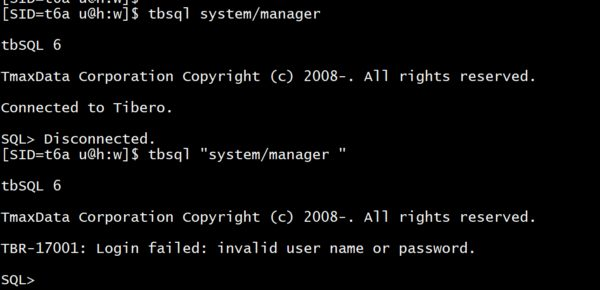
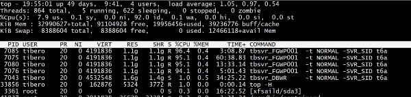

This was first published on https://www.dbi-services.com/blog/tibero-ii/ (2020-05-26)
Republishing here for new followers. The content is related to the versions available at the publication date.
.
In a previous post I introduced Tibero as The most compatible alternative to Oracle Database. Compatibility is one thing but one day you will want to compare the performance. I’ll not do any benchmark here but show you how you we can look at the performance with TPR – the Tibero Performance Repository – as an equivalent of AWR – the Oracle Automatic Workload Repository. And, as I needed to run some workload, I attempted to run something that has been written with Oracle Database in mind: the Kevin Closson SLOB – Silly Little Oracle Benchmark. The challenge is to make it run on Tibero and get a TPR report.
I’ve downloaded SLOB from:
git clone https://github.com/therealkevinc/SLOB_distribution.git
tar -zxvf SLOB_distribution/2019.11.18.slob_2.5.2.tar.gz
and I’ll detail what I had to change in order to have it running on Tibero.
The client command line is “tbsql” and has a very good compatibility with sqlplus:
[SID=t6a u@h:w]$ tbsql -h
Usage: tbsql [options] [logon] [script]
options
-------
-h,--help Displays this information
-v,--version Displays version information
-s,--silent Enables silent mode. Does not display the
start-up message, prompts and commands
-i,--ignore Ignore the login script (eg, tbsql.login)
logon
-----
[username[/password[@connect_identifier]]]
script
------
@filename[.ext] [parameter ...]
[SID=t6a u@h:w]$ tbsql
tbSQL 6
TmaxData Corporation Copyright (c) 2008-. All rights reserved.
SQL> help
HELP
----
Displays the Help.
{H[ELP]|?} topic
where topic is
! {exclamation} % {percent} @ {at} @@ {double at}
/ {slash} ACCEPT APPEND ARCHIVE LOG
CHANGE CLEAR COLUMN CONNECT
DEFINE DEL DESCRIBE DISCONNECT
EDIT EXECUTE EXIT EXPORT
HELP HISTORY HOST INPUT
LIST LOADFILE LOOP LS
PASSWORD PAUSE PING PRINT
PROMPT QUIT RESTORE RUN
SAVE SET SHOW TBDOWN
SPOOL START UNDEFINE VARIABLE
WHENEVER
However, there are a few things I had to change.
The silent mode is “-s” instead of “-S”
The “-L” (no re-prompt if the connection fails) doesn’t exist: tbsql does not re-prompt, and leaves you in the CLI rather than exiting.
sqlplus does not show feedback for less than 5 rows. tbsql shows it always by default. We can get the same sqlplus output by setting SET FEEDBACK 6
tbsql returns “No Errors” where sqlplus returns “No errors”
You cannot pass additional spaces in the connection string. Sqlplus ignores them bit tbsql complains: 
All those were easy to change in the setup.sh and runit.sh scripts.
I actually defined a sqlplus() bash function to handle those:
sqlplus(){
set -- ${@// /}
set -- ${@/-L/}
set -- ${@/-S/-s}
sed \
-e '1 i SET FEEDBACK 6' \
tbsql $* | sed \
-e 's/No Errors/No errors/'
echo "--- call stack --- ${FUNCNAME[0]}()$(basename $0)#${LINENO}$(f=0;while caller $f;do((f++));done|awk '{printf " &2
echo "--- parameters --- tbsql $*" >&2
}
As you can see I’ve added the print of the bash callstack which I used to find those issues. Here is the idea:
# print call stack in bash:
echo "=== call stack === ${FUNCNAME[0]}()$(basename $0)#${LINENO}$(f=0;while caller $f;do((f++));done|awk '{printf " <- "$2"()@"$3"#"$1}')" >&2 pic.twitter.com/qhVEMSJkeU— Franck Pachot (@FranckPachot) January 5, 2020
The equivalent of TNSPING is TBPROBE. It takes a host:port and display nothing but returns a 0 return code when the connection is ok or 3 when it failed. Note that there are other status like 1 when the connection is ok but the database is read-only, 2 when in mount or nomount. You see here an architecture difference with Oracle: there is no listener but it is the database that listens on a port.
A little detail with no importance here, my database port is 8629 as mentioned in the previous post but tbprobe actually connects to 8630:
[SID=t6a u@h:w]$ strace -fyye trace=connect,getsockname,recvfrom,sendto tbprobe localhost:8629
connect(4, {sa_family=AF_UNIX, sun_path="/var/run/nscd/socket"}, 110) = -1 ENOENT (No such file or directory)
connect(4, {sa_family=AF_UNIX, sun_path="/var/run/nscd/socket"}, 110) = -1 ENOENT (No such file or directory)
getsockname(4, {sa_family=AF_NETLINK, nl_pid=41494, nl_groups=00000000}, [12]) = 0
sendto(4, {{len=20, type=RTM_GETADDR, flags=NLM_F_REQUEST|NLM_F_DUMP, seq=1589797671, pid=0}, {ifa_family=AF_UNSPEC, ...}}, 20, 0, {sa_family=AF_NETLINK, nl_pid=0, nl_groups=00000000}, 12) = 20
connect(4, {sa_family=AF_INET, sin_port=htons(8630), sin_addr=inet_addr("127.0.0.1")}, 16) = 0
getsockname(4127.0.0.1:8630]>, {sa_family=AF_INET, sin_port=htons(50565), sin_addr=inet_addr("127.0.0.1")}, [28->16]) = 0
connect(4, {sa_family=AF_INET, sin_port=htons(8630), sin_addr=inet_addr("127.0.0.1")}, 16) = 0
recvfrom(4127.0.0.1:8630]>, "\0\0\0\0\0\0\0@\0\0\0\0\0\0\0\0", 16, 0, NULL, NULL) = 16
recvfrom(4127.0.0.1:8630]>, "\0\0\0\2\0\0\0\17\0\0\0\2\0\0\0\0\0\0\0\0\0\0\0\6\0\0\0\0\0\0\0\6"..., 64, 0, NULL, NULL) = 64
sendto(4127.0.0.1:8630]>, "\0\0\0\204\0\0\0\f\0\0\0\0\0\0\0\0\0\0\0\0\0\0\0\0\0\0\0\0", 28, 0, NULL, 0) = 28
recvfrom(4127.0.0.1:8630]>, "\0\0\0\204\0\0\0\f\0\0\0\0\0\0\0\0", 16, 0, NULL, NULL) = 16
recvfrom(4127.0.0.1:8630]>, "\0\0\0e\0\0\0\0\0\0\0\1", 12, 0, NULL, NULL) = 12
+++ exited with 0 +++
The return code is correct. What actually happens is that Tibero does not seem to use Out-Of-Band but another port to be able to communicate if the default port is in use. And this is the next port number as mentioned in my instance process list as “listener_special_port”:
[SID=t6a u@h:w]$ cat /home/tibero/tibero6/instance/t6a/.proc.list
Tibero 6 start at (2019-12-16 14:03:00) by 54323
shared memory: 140243894161408 size: 3221225472
shm_key: 847723696 1 sem_key: -1837474876 123 listener_pid: 7026 listener_port: 8629 listener_special_port: 8630 epa_pid: -1
7025 MONP
7027 MGWP
7028 FGWP000
7029 FGWP001
7030 PEWP000
7031 PEWP001
7032 PEWP002
7033 PEWP003
7034 AGNT
7035 DBWR
7036 RCWP
This means that when my database listener is 8629 TBPROBE will return “ok” for 8628 and 8629
[SID=t6a u@h:w]$ for p in {8625..8635} ; do tbprobe localhost:$p ; echo "localhost:$p -> $?" ; done
localhost:8625 -> 3
localhost:8626 -> 3
localhost:8627 -> 3
localhost:8628 -> 0
localhost:8629 -> 0
localhost:8630 -> 3
localhost:8631 -> 3
localhost:8632 -> 3
localhost:8633 -> 3
localhost:8634 -> 3
localhost:8635 -> 3
Anyway, this has no importance here and I just ignore the tnsping test done by SLOB:
tnsping(){
true
}
Tibero SQL does not allow to create a user with the grant statement and needs explicit CREATE. In setup.sh I did the following replacement
--GRANT CONNECT TO $user IDENTIFIED BY $user;
CREATE USER $user IDENTIFIED BY $user;
GRANT CONNECT TO $user;
The implicit creation of a user with a grant statement is an oraclism that is not very useful anyway.
PARALLEL and CACHE attributes are not allowed at the same place as in Oracle:
-- PARALLEL CACHE PCTFREE 99 TABLESPACE $tablespace
-- STORAGE (BUFFER_POOL KEEP INITIAL 1M NEXT 1M MAXEXTENTS UNLIMITED);
PCTFREE 99 TABLESPACE $tablespace
STORAGE (BUFFER_POOL KEEP INITIAL 1M NEXT 1M MAXEXTENTS UNLIMITED) PARALLEL CACHE;
--NOCACHE PCTFREE 99 TABLESPACE $tablespace
--STORAGE (BUFFER_POOL KEEP INITIAL 1M NEXT 1M MAXEXTENTS UNLIMITED);
PCTFREE 99 TABLESPACE $tablespace
STORAGE (BUFFER_POOL KEEP INITIAL 1M NEXT 1M MAXEXTENTS UNLIMITED);
They just go at the end of the statement and that’s fine.
Tibero has no SYSTEM user by default, I create one. And by the same occasion create the IOPS tablespace:
tbsql sys/tibero <<SQL
create user system identified by manager;
grant dba to system;
create tablespace IOPS ;
SQL
those are the changes I’ve made to be able to run SLOB setup.sh and runit.sh
I also had to change a few things in slob.sql
There is no GET_CPU_TIME() in DBMS_UTILITY so I comment it out:
--v_end_cpu_tm := DBMS_UTILITY.GET_CPU_TIME();
--v_begin_cpu_tm := DBMS_UTILITY.GET_CPU_TIME();
I didn’t check for an equivalent here and just removed it.
The compatibility with Oracle is very good so that queries on V$SESSION are the same, The only thing I changed is the SID userenv that is called TID in Tibero:
SELECT ((10000000000 * (SID + SERIAL#)) + 1000000000000) INTO v_my_serial from v$session WHERE sid = ( select sys_context('userenv','tid') from dual);
I got a TBR-11006: Invalid USERENV parameter before this change.
This session ID is larger so I removed the precision:
--v_my_serial NUMBER(16);
v_my_serial NUMBER;
I got a TBR-5111: NUMBER exceeds given precision. (n:54011600000000000, p:16, s:0) before changing it.
The dbms_output was hanging and I disable it:
--SET SERVEROUTPUT ON ;
I didn’t try to understand the reason. That’s a very bad example of troubleshooting but I just want it to run now.
Again, without trying to understand further, I replaced all PLS_INTEGER by NUMBER as I got: TBR-5072: Failure converting NUMBER to or from a native type
In slob.conf I changed only UPDATE_PCT to 0 for a read-only workload and changed “statspack” to “awr”, and I was able to create 8 schemas:
./setup.sh IOPS 8 </dev/null
(I redirect /dev/null to stdin because my sqlplus() function above reads it)
Now ready to run SLOB.
This is sufficient to run it but I want to collect statistics from the Tibero Performance Repository (TPR).
Tibero Performance Repository is the equivalent of AWR. The package to manage it is DBMS_TPR instead of DBMS_WORKLOAD_REPOSITORY. It has a CREATE_SNAPSHOT procedure, and a REPORT_LAST_TEXT to generate the report between the two last snapshots, without having to get the snapshot ID.
I’ve replaced the whole statistics() calls in runit.sh by:
tbsql system/manager <<<'exec dbms_tpr.create_snapshot;';
before
and:
tbsql system/manager <<<'exec dbms_tpr.create_snapshot;';
tbsql system/manager <<<'exec dbms_tpr.report_text_last;';
after.
Now running:
sh runit.sh 4 </dev/null
and I can see the 4 sessions near 100% in CPU. 
Note that they are threads in Tibero, need to tun “top -H” to see the detail:
Here is the report for 5 minutes of running on one session:
--------------------------------------------------------------------------------
*** TPR (Tibero Performance Repository) Report ***
--------------------------------------------------------------------------------
DB Name : t6a
TAC : NO
TSC : NO
Instance Cnt : 1
Release : 6 r166256 ( LINUX_X86_64 )
Host CPUs : 48
Interval condition : 758 (snapshot id) (#=1 reported)
Report Snapshot Range : 2020-05-26 20:02:37 ~ 2020-05-26 20:07:38
Report Instance Cnt : 1 (from Instance NO. 'ALL')
Elapsed Time : 5.02 (mins)
DB Time : 4.99 (mins)
Avg. Session # : 1.00
I’m running a simple installation. No TSC (Tibero Standby Cluster, the Active Data Guard equivalent) and no TAC (the Oracle RAC equivalent).
This report is a run with one session only (DB time = Elapsed time) and Avg. Session # is 1.00.
================================================================================
2.1 Workload Summary
================================================================================
Per Second Per TX Per Exec Per Call
--------------- --------------- --------------- ---------------
DB Time(s): 1.00 7.68 0.00 42.80
Redo Size: 3,096.93 23,901.92 0.52 133,167.86
Logical Reads: 394,911.05 3,047,903.26 66.40 16,981,175.29
Block Changes: 26.60 205.33 0.00 1,144.00
Physical Reads: 0.00 0.00 0.00 0.00
Physical Writes: 1.31 10.08 0.00 56.14
User Calls: 0.02 0.18 0.00 1.00
Parses: 0.02 0.18 0.00 1.00
Hard Parses: 0.00 0.00 0.00 0.00
Logons: 0.01 0.05 0.00 0.29
Executes: 5,947.03 45,898.85 1.00 255,722.14
Rollbacks: 0.00 0.00 0.00 0.00
Transactions: 0.13 1.00 0.00 5.57
394,911 logical reads per second is comparable to what I can get from Oracle on this Intel(R) Xeon(R) Platinum 8167M CPU @ 2.00GHz but let’s see what happens with some concurrency. I miss the DB CPU(s) which can quickly show that I am running mostly on CPU but this can be calculated from other parts of the report.(DB CPU time is 299,134 which covers the 5 minutes elapsed time). The “Per Call” is interesting as it has more meaning than the “Per Execution” one which counts the recursive executions.
Another report from the run above with 4 concurrent sessions:
--------------------------------------------------------------------
*** TPR (Tibero Performance Repository) Report ***
--------------------------------------------------------------------
DB Name : t6a
TAC : NO
TSC : NO
Instance Cnt : 1
Release : 6 r166256 ( LINUX_X86_64 )
Host CPUs : 48
Interval condition : 756 (snapshot id) (#=1 reported)
Report Snapshot Range : 2020-05-2619:54:48 ~ 2020-05-2619:59:49
Report Instance Cnt : 1 (from Instance NO. 'ALL')
Elapsed Time : 5.02 (mins)
DB Time : 19.85 (mins)
Avg. Session # : 1.00
Ok, there’s a problem in the calculation of “Avg. Session #” which should be 19.85 / 5.02 = 3.95 for my 4 sessions.
About the Host:
================================================================================
1.1 CPU Usage
================================================================================
Total B/G Host CPU Usage(%)
DB CPU DB CPU ----------------------------------
Instance# Usage(%) Usage(%) Busy User Sys Idle IOwait
----------- -------- -------- ----- ----- ----- ----- ------
0 7.9 7.9 7.9 7.8 0.1 92.1 0.0
mostly idle as I have 38 vCPUs there.
====================================================================
1.2 Memory Usage
====================================================================
HOST Mem Size : 322,174M
Total SHM Size : 3,072M
Buffer Cache Size : 2,048M
Avg. Shared Pool Size : 288.22M
Avg. DD Cache Size : 8.22M
Avg. PP Cache Size : 63.44M
DB Block Size : 8K
Log Buffer Size : 10M
My workload size (80MB defined in slob.conf) is much smaller than the buffer cache.
and then I expect an average of 4 active sessions in CPU:
====================================================================
2.1 Workload Summary
====================================================================
Per Second Per TX Per Call
--------------- --------------- ---------------
DB Time(s): 3.96 38.41 79.38
Redo Size: 3,066.07 29,770.52 61,525.73
Logical Reads: 427,613.99 4,151,993.87 8,580,787.33
Block Changes: 26.36 255.90 528.87
Physical Reads: 0.00 0.00 0.00
Physical Writes: 0.99 9.61 19.87
User Calls: 0.05 0.48 1.00
Parses: 0.03 0.29 0.60
Hard Parses: 0.00 0.00 0.00
Logons: 0.02 0.16 0.33
Executes: 67,015.04 650,694.45 1,344,768.53
Rollbacks: 0.00 0.00 0.00
Transactions: 0.10 1.00 2.07
3.96 average session is not so bad. But 427,613 LIOPS is only a bit higher than the 1 session run, but now with 4 concurrent sessions. 4x CPU usage for only 10% higher throughput…
At this point I must say that I’m not doing a benchmark here. I’m using the same method as I do with Oracle, for which I know quite well how it works, but here Tibero is totally new for me. I’ve probably not configured it correctly and the test I’m doing may not be correct. I’m looking at the number here only to understand a bit more how it works.
The Time Model is much more detailed than Oracle one:
================================================================================
2.2 Workload Stats
================================================================================
DB DB
Category Stat Time(ms) Time(%)
-------------------- ----------------------------------------- --------------- --------
Request Service Time ----------------------------------------- 1,190,760 100.00
SQL processing time 1,200,818 100.84
reply msg processing time for others 0 0.00
commit by msg time 0 0.00
SQL processing (batchupdate) time 0 0.00
rollback by msg time 0 0.00
msg lob time 0 0.00
msg xa time 0 0.00
msg dpl time 0 0.00
msg dblink 2pc time 0 0.00
msg tsam time 0 0.00
msg long read time 0 0.00
SQL Processing ----------------------------------------- 1,200,818 100.84
SQL execute elapsed time 369,799 31.06
csr fetch select time 355,744 29.88
parse time elapsed 83,992 7.05
sql dd lock acquire time 25,045 2.10
ppc search time 5,975 0.50
csr fetch insert time 115 0.01
csr fetch delete time 37 0.00
hard parse elapsed time 2 0.00
total times to begin tx 1 0.00
failed parse elapsed time 1 0.00
sql dml lock acquire time 0 0.00
cursor close time 0 0.00
stat load query hard parse elapsed time 0 0.00
stat load query soft parse time elapsed 0 0.00
csr fetch direct path insert time 0 0.00
csr fetch merge time 0 0.00
optimizer time 0 0.00
csr fetch update time 0 0.00
stat load query row fetch time 0 0.00
Select ----------------------------------------- 17 0.00
table full scan time 11 0.00
hash join time 6 0.00
sort time 0 0.00
op_proxy execution time 0 0.00
Insert ----------------------------------------- 1 0.00
tdd mi total time 1 0.00
tdi insert key time 0 0.00
tdd insert row time 0 0.00
tdi mi total time 0 0.00
tdi fast build time 0 0.00
Update ----------------------------------------- 0 0.00
tdd update rp time 0 0.00
tdd update row time 0 0.00
tdd mu total time 0 0.00
idx leaf update nonkey time 0 0.00
Delete ----------------------------------------- 15 0.00
tdd delete row time 15 0.00
tdd delete rp time 0 0.00
tdd md total time 0 0.00
tdi md total time 0 0.00
tdi delete key time 0 0.00
I am surprised to spend 7% of the time in parsing, as I expect the few queries to be parsed only once there, which is confirmed by the Workload Summary above.
Having a look at the ratios:
================================================================================
3.1 Instance Efficiency
================================================================================
Value
--------
Buffer Cache Hit %: 100.00
Library Hit %: 100.00
PP Hit %: 99.54
Latch Hit %: 98.44
Redo Alloc Hit %: 100.00
Non-Parse CPU %: 92.95
confirms that 7% of the CPU time is about parsing.
We have many statistics. Here are the timed-base ones:
================================================================================
6.1 Workload Stats (Time-based)
================================================================================
Stat Time(ms) Avg. Time(ms) Num Size
----------------------------------------- --------------- --------------- --------------- ---------------
SQL processing time 1,200,818 120,081.8 10 0
Inner SQL processing time 1,200,817 120,081.7 10 0
req service time 1,190,760 79,384.0 15 0
DB CPU time 1,120,908 1.6 705,270 0
SQL execute elapsed time 369,799 0.0 20,174,294 0
csr fetch select time 355,744 0.0 20,174,264 0
tscan rowid time 187,592 0.0 20,174,102 0
PSM execution elapsed time 129,820 0.0 60,514,594 0
parse time elapsed 83,992 0.0 20,174,308 0
tdi fetch start time 47,440 0.0 20,175,956 1,660,966
sql dd lock acquire time 25,045 0.0 20,171,527 0
isgmt get cr in lvl time 25,004 0.0 20,390,418 22,268,417
isgmt get cr time 21,500 0.0 22,479,405 0
tscan rowid pick exb time 18,734 0.0 106,200,851 0
tscan rowid sort time 15,529 0.0 20,173,326 0
ppc search time 5,975 0.0 20,174,325 0
dd search time 4,612 0.0 40,344,560 0
...
hard parse elapsed time 2 0.1 13 0
...
failed parse elapsed time 1 0.1 5 0
...
This parse time is not hard parse.
The non-timed-based statistics are conveniently ordered by number which is more useful than by alphabetical order:
================================================================================
6.2 Workload Stats (Number-based)
================================================================================
Stat Num Size Time(ms)
----------------------------------------- --------------- --------------- ---------------
candidate bh scanned 128,715,142 153,638,765 0
consistent gets - no clone 128,700,485 0 0
fast examines for consistent block gets 128,700,414 0 0
consistent block gets 128,698,143 0 0
block pin - not conflict 128,691,338 0 796
block unpin 128,691,332 0 333
rowid sort prefetch 106,200,861 18,945,339 0
tscan rowid pick exb 106,200,851 0 18,734
dd search count 40,344,560 0 4,612
Number of conflict DBA while scanning can 24,917,669 0 0
...
tdi fetch start total 20,175,956 1,660,966 47,440
parse count (for all sessions) 20,174,308 0 83,992
csr fetch select 20,174,264 0 355,744
tscan rowid 20,174,102 0 187,592
tscan rowid sort 20,173,326 0 15,529
memory tuner prof register 20,171,661 20,171,661 198
execute count 20,171,528 0 0
sql dd lock acquire 20,171,527 0 25,045
...
parse count (total) 9 0 0
...
and this clearly means that I had as many parses as counts. Then I realized that there was nothing about a parse-to-execute ratio in the “Instance Efficiency” which is the only ratio I read at in Oracle “Instance Efficiency”. Even if the terms are similar there’s something different from Oracle.
The only documentation I’ve found is in Korean: https://technet.tmaxsoft.com/download.do?filePath=/nas/technet/technet/upload/kss/tdoc/tibero/2015/02/&fileName=FILE-20150227-000002_150227145000_1.pdf
According to this, “parse time elapsed” is the time spent in “parse count (for all sessions)”, and covers parsing, syntax and semantic analysis which is what we call soft parse in Oracle. “parse count (total)” is parsing, transformation and optimization, which is what we call hard parse in Oracle. With this very small knowledge, it looks like, even if called from PL/SQL, a soft parse occurred for each execution. Look also at the “dd’ statistics: “sql dd lock acquire time” is 2.1% of DB time and looks like serialization on the Data Dictionary. And, even if not taking lot of time (“dd search time” is low) the “dd search count” is called 2 times per execution: soft parse of the small select has to read the Data Dictionary definitions.
Of course we have wait events (not timed events as this section does not include the CPU):
================================================================================
3.2 Top 5 Wait Events by Wait Time
================================================================================
Time Wait Avg Waits DB
Event Waits -outs(%) Time(s) Wait(ms) /TX Time(%)
------------------------------ --------------- -------- ------------ ------------ ------------ --------
spinlock total wait 787,684 0.00 45.47 0.06 2,540,916.13 3.82
dbwr write time - OS 7 0.00 0.16 23.14 22.58 0.01
spinlock: cache buffers chains 9,837 0.00 0.12 0.01 31,732.26 0.01
redo write time 36 0.00 0.03 0.78 116.13 0.00
log flush wait for commit 31 0.00 0.03 0.81 100.00 0.00
Only “spinlock total wait” is significant here.
Here is the section about latches:
================================================================================
7.7 Spinlock(Latch) Statistics
================================================================================
Get Get Avg.Slps Wait Nowait Nowait DB
Name Request Miss(%) /Miss Time(s) Request Miss(%) Time(%)
------------------------------ --------------- -------- -------- ------------ ------------ -------- --------
SPIN_SPIN_WAITER_LIST 2,190,429 4.07 3.60 51.69 0 0.00 4.34
SPIN_ALLOC 161,485,088 10.40 3.71 41.42 0 0.00 3.48
SPIN_LC_BUCKET 60,825,921 0.53 25.55 3.31 0 0.00 0.28
SPIN_ROOT_ALLOC 126,036,981 0.00 79.52 0.16 126,040,272 0.00 0.01
SPIN_BUF_BUCKET 257,429,840 0.00 15.82 0.12 34 0.00 0.01
SPIN_RECR_UNPIN 121,038,780 0.00 57.14 0.08 36,039 0.01 0.01
SPIN_SQLSTATS 40,383,027 0.36 0.61 0.07 0 0.00 0.01
This looks like very generic Latch protected by spinlock.
While I was there I ran a Brendan Gregg Flamegraph during the run:
perf script -i ./perf.data | FlameGraph/stackcollapse-perf.pl | FlameGraph/flamegraph.pl --width=1200 --hash --cp > /tmp/tibero-slob.svg
if you ever traced some Oracle PL/SQL call stacks, you can see that Tibero is completely different implementation. But the features are very similar. TPR is really like AWR. And there is also an ASH equivalent. You may have seen in the previous post that I have set ACTIVE_SESSION_HISTORY=Y in the .tip file (Tibero instance parameters). You can query a v$active_session_history.
Given the similarity with Oracle, let’s do a good old ‘tkprof’.
I run the SLOB call with SQL_TRACE enabled:
[SID=t6a u@h:w]$ tbsql user1/user1
tbSQL 6
TmaxData Corporation Copyright (c) 2008-. All rights reserved.
Connected to Tibero.
SQL> alter session set sql_trace=y;
Session altered.
SQL> @slob 1 0 0 300 10240 64 LITE 0 FALSE 8 16 3 0 .1 .5 0
PSM completed.
SQL> alter session set sql_trace=y;
Session altered.
The raw trace has been generated, which contains things like this:
=========================================================
PARSING IN CSR=#8 len=87, uid=172, tim=1590498896169612
SELECT COUNT(c2)
FROM cf1
WHERE ( custid > ( :B1 - :B2 ) ) AND (custid < :B1)
END OF STMT
[PARSE] CSR=#8 c=0, et=29, cr=0, cu=0, p=0, r=0, tim=1590498896169655
[EXEC] CSR=#8 c=0, et=48, cr=0, cu=0, p=0, r=0, tim=1590498896169720
[FETCH] CSR=#8 c=0, et=307, cr=66, cu=0, p=0, r=1, tim=1590498896170044
[PSM] OBJ_ID=-1, ACCESS_NO=0 c=0, et=14, cr=0, cu=0, p=0, r=0, tim=1590498896170090
[STAT] CSR=#8 ppid=4826 cnt_in_L=1 cnt=1 dep=0 'column projection (et=2, cr=0, cu=0, co=63, cpu=0, ro=1)'
[STAT] CSR=#8 ppid=4826 cnt_in_L=64 cnt=1 dep=1 'sort aggr (et=6, cr=0, cu=0, co=63, cpu=0, ro=1)'
[STAT] CSR=#8 ppid=4826 cnt_in_L=64 cnt=64 dep=2 'table access (rowid) CF1(3230) (et=258, cr=64, cu=0, co=63, cpu=0, ro=60)'
[STAT] CSR=#8 ppid=4826 cnt_in_L=0 cnt=64 dep=3 'index (range scan) I_CF1(3235) (et=20, cr=2, cu=0, co=2, cpu=0, ro=60)'
CSR_CLOSE #8
[PSM] OBJ_ID=-1, ACCESS_NO=0 c=0, et=62, cr=0, cu=0, p=0, r=0, tim=1590498896170170
=========================================================
And all this can be aggregated by TBPROF:
tbprof tb_sqltrc_17292_63_2107964.trc tb_sqltrc_17292_63_2107964.txt sys=yes sort="prscnt"
Which gets something very similar to Oracle tkprof:
SELECT COUNT(c2)
FROM cf1
WHERE ( custid > ( :B1 - :B2 ) ) AND (custid < :B1)
stage count cpu elapsed current query disk rows
-----------------------------------------------------------------------------
parse 1 0.00 0.00 0 0 0 0
exec 829366 28.41 27.68 0 0 0 0
fetch 829366 137.36 135.18 0 55057089 0 829366
-----------------------------------------------------------------------------
sum 1658733 165.77 162.86 0 55057089 0 829366
rows u_rows execution plan
----------------------------------------------------------
829366 - column projection (et=859685, cr=0, cu=0, co=52250058, cpu=0, ro=829366)
829366 - sort aggr (et=3450526, cr=0, cu=0, co=52250058, cpu=0, ro=829366)
53079424 - table access (rowid) CF1(3230) (et=106972426, cr=53079424, cu=0, co=52250058, cpu=0, ro=49761960)
53079424 - index (range scan) I_CF1(3235) (et=9256762, cr=1977665, cu=0, co=1658732, cpu=0, ro=49761960)
But here I’m puzzled. From the TPR statistics, I got the impression that each SQL in the PSM (Persistent Stored Procedure – the PL/SQL compatible procedural language) was soft parsed but I was wrong: I see only one parse call here. Is there something missing there? I don’t think so. The total time in this profile is 162.86 seconds during a 300 seconds run without any think time. Writing the trace file is not included there. if I compare the logical reads per second during the SQL time: 55057089/162.86=338064 I am near the value I got without sql_trace.
I leave it with unanswered questions about the parse statistics. The most important, which was the goal of this post, is that there’s lot of troubleshooting tools, similar to Oracle, and I was able to run something that was really specific to Oracle, with sqlplus, SQL, and PL/SQL without the need for many changes.
{kind=link}
{kind=link}
{kind=link}